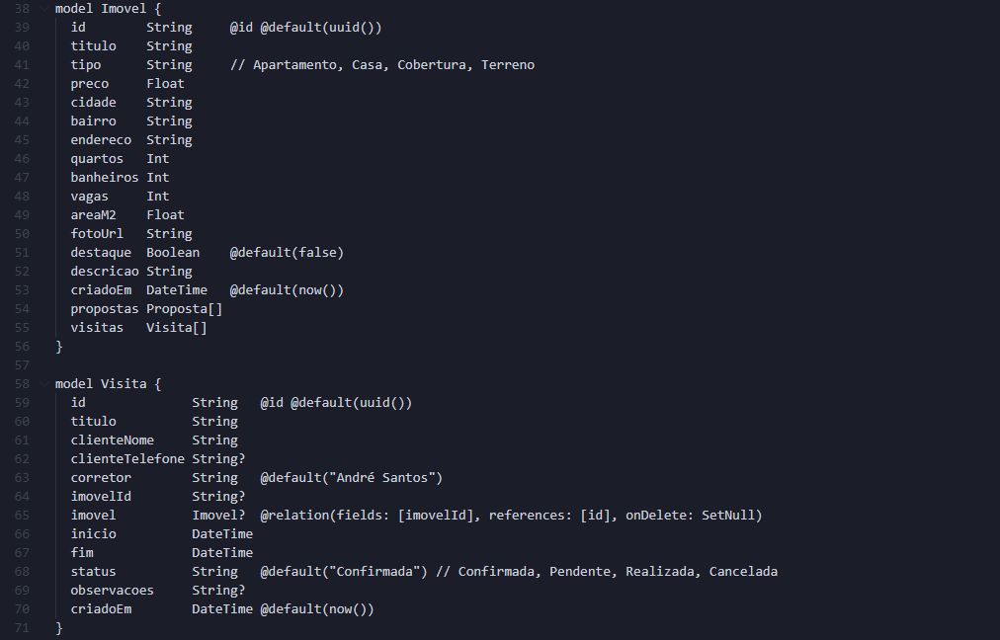
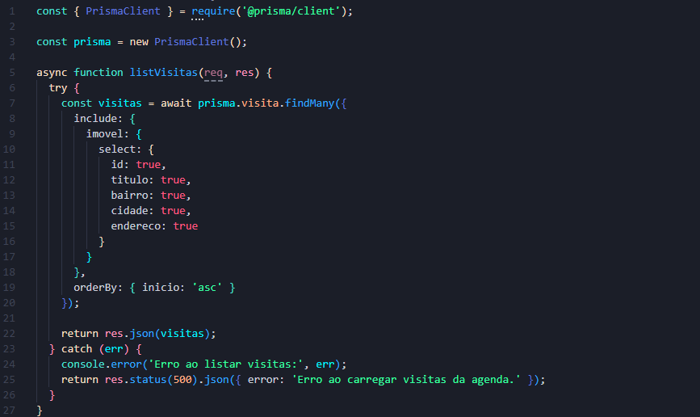
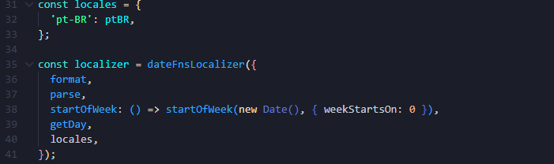
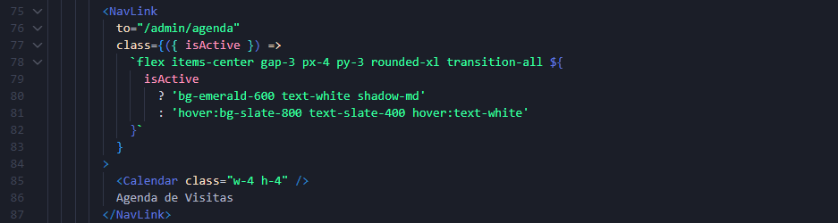
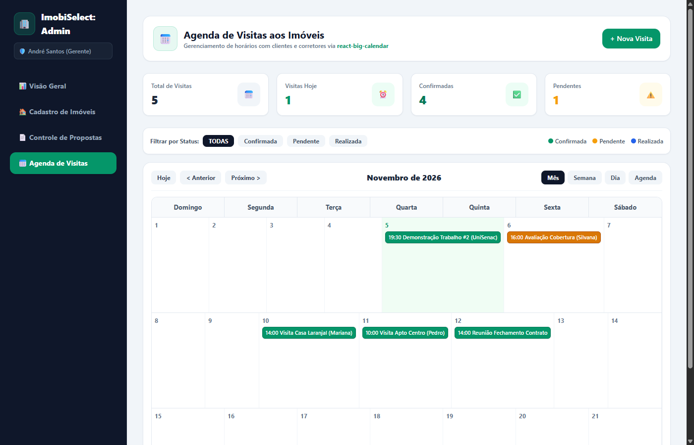
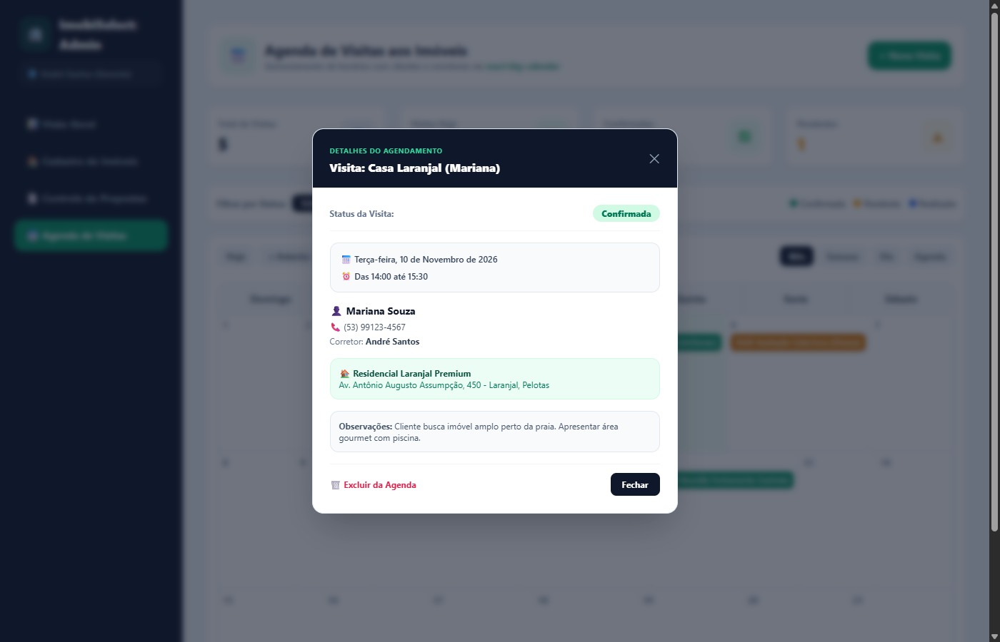

Implementação prática de agendamento de visitas a imóveis integrada ao sistema web ImobiSelect.
Numa imobiliária, controlar visitas de clientes apenas por tabelas ou listas dificulta enxergar horários livres, durações dos atendimentos e possíveis conflitos na rotina dos corretores.
Uma interface visual onde os corretores visualizam seus horários no mês, na semana ou no dia, podendo agendar novas visitas diretamente ao clicar nos horários livres.
date-fns (pt-BR).
No arquivo schema.prisma, criamos o modelo Visita com relação de chave estrangeira apontando para Imovel.

O controlador gerencia as requisições HTTP da agenda. Na função listVisitas, incluímos os dados do imóvel na resposta via include: { imovel: true }.

O react-big-calendar requer um localizador para gerenciar formatos de data. Utilizamos o date-fns com a localização brasileira (pt-BR).
dateFnsLocalizer traduz os nomes dos meses, dias da semana e organiza o início da semana no domingo (weekStartsOn: 0).

Adicionamos o link de acesso à Agenda de Visitas na barra lateral do painel administrativo utilizando o NavLink do React Router.
/admin/agenda cadastrada

Ao clicar em qualquer evento do calendário, abre o modal de detalhes permitindo:

O mesmo componente pode ser utilizado no TCC ou projetos futuros para: